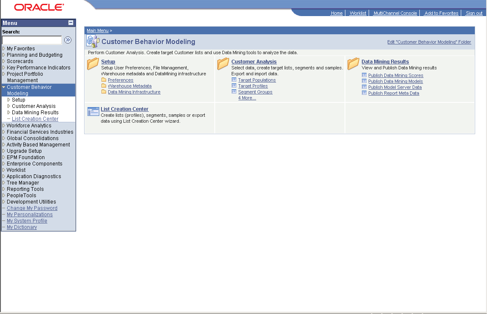
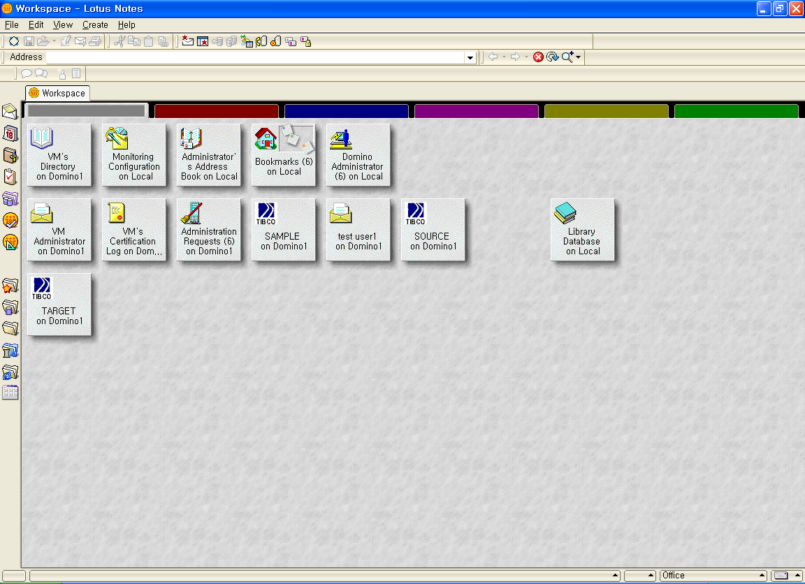
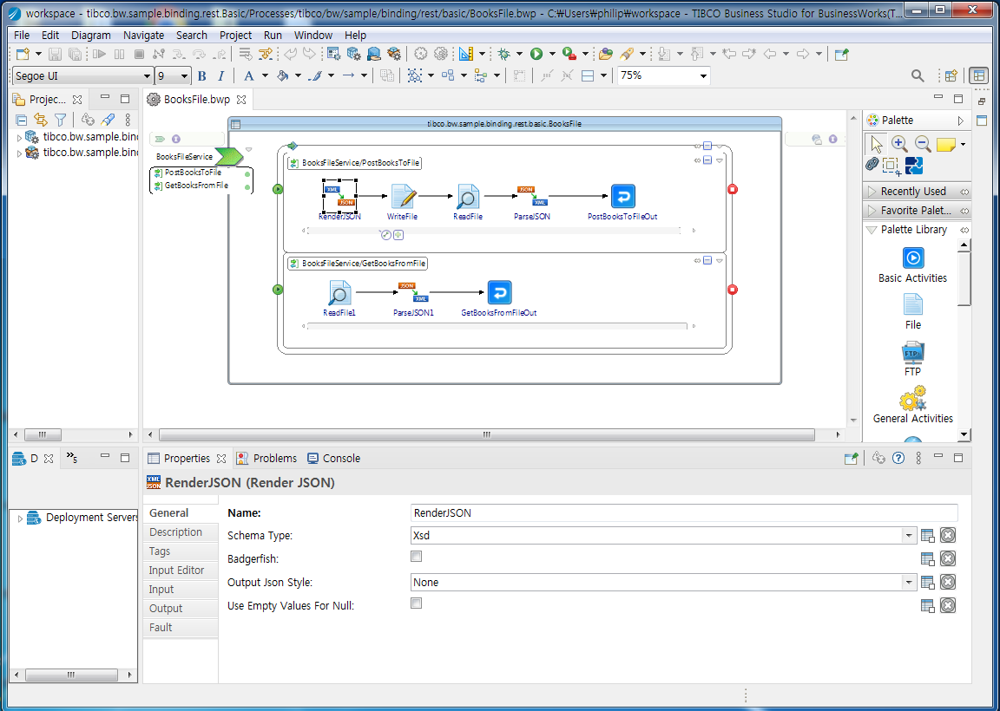

1. 레거시는 왜 바꾸기 어려운가
레거시(Legacy) 시스템은 수십 년간 기업의 핵심 업무를 떠받쳐 온 중요한 자산이다. 은행의 계정계, 통신사의 과금, 제조사의 생산관리 — 가장 중요한 일일수록 레거시 위에서 돌아간다.
그런데 큰 문제 없이 잘 돌아가는 레거시를 바꾸고 개선하는 일은 엄청난 부담이다.
- 장애가 나면 해결이 어렵다 — 오래되고 복잡해, 무엇이 문제인지 찾기조차 힘들다.
- 업무를 바꾸려면 비용이 크다 — 작은 변경에도 막대한 시간과 돈, 그리고 위험이 따른다.
그래서 많은 사람들이 이렇게 생각한다 — "레거시는 빠르게 변하는 비즈니스 환경에 맞지 않는다." 하지만 그렇다고 멀쩡히 돌아가는 핵심 시스템을 섣불리 들어내는 것은 더 큰 위험이다.
진짜 필요한 것은 "레거시를 바꾸는 것"이 아니라, "레거시를 바꾸지 않고도 투명하게 들여다보고 운영하는 것"이다.
2. 기존 벤더들의 한계 — 레거시를 모른다
Observability(관측), AIOps, 데이터 플랫폼을 제공하는 대부분의 벤더는 레거시에 대한 전문성이 부족하다. 이들의 도구는 현대적인 웹·클라우드 환경에 맞춰져 있어, 메인프레임이나 TP 모니터 같은 전통 시스템 앞에서는 멈춰 선다.
그 결과는 두 가지 위험으로 이어진다.
- 업무 프로세스의 단절 — 흐름이 레거시로 들어가는 순간 추적이 끊겨, 전체 그림을 볼 수 없다.
- 중요한 데이터의 누락 — 가장 핵심적인 데이터가 레거시 안에 있는데, 그걸 놓친다.
레거시 없는 온톨로지는 반쪽짜리다
올바른 온톨로지를 설계하려면 업무 프로세스와 데이터에 대한 깊은 이해가 필요하다. 그런데 레거시를 빼고 프론트엔드와 백엔드만으로는 제대로 된 온톨로지를 그릴 수 없다. 지도에서 가장 중요한 영역이 비어 있는 셈이기 때문이다.
마이크로서비스는 통로일 뿐, 핵심은 레거시다
금융·통신·제조 같은 전통 산업에서 마이크로서비스(MSA)는 종종 레거시에 도달하기 위한 통로에 지나지 않는다. 화면과 API는 현대화됐을지 몰라도, 돈과 계약과 생산을 실제로 처리하는 핵심 로직은 여전히 레거시 안에 있다. 레거시를 보지 못하는 온톨로지는 결국 본질을 비켜 간다.
3. JuneAI의 차별점 — 레거시 "내부"까지 추적한다
JuneAI는 레거시 애플리케이션 내부의 메서드 수준까지 추적할 수 있도록 구성한다. 바깥에서 "느리다"는 사실만 아는 것이 아니라, 레거시 안의 어느 처리 단계에서 무슨 일이 벌어졌는지까지 들여다본다.
- 예를 들어 SAP RFC 호출이나 TUXEDO 메서드를 포함한 전 구간(end-to-end)을 추적한다.
- 이를 통해 문제를 식별하고, 뿌리까지 내려가 근본 원인을 분석한다.
💡 RFC(Remote Function Call)는 SAP 시스템 안팎에서 기능을 호출하는 핵심 통로이고, TUXEDO 메서드는 통신·카드사의 거래를 처리하는 핵심 단위이다. 바로 이 지점들이 추적되지 않으면, 장애 분석은 "레거시 앞에서 멈춘" 반쪽짜리가 된다.
산업별 온톨로지로 제공
JuneAI는 SAP, SIEBEL, PeopleSoft, EBS(Oracle E-Business Suite) 등의 복잡한 내부 처리와 데이터 모델을 온톨로지로 구성해, 산업별 온톨로지로 제공한다. 고객이 레거시 내부를 일일이 해석하지 않아도, 이미 업무 구조가 반영된 온톨로지를 바로 활용할 수 있다.
4. JuneAI가 다루는 대표 레거시
IBM, ORACLE, SAP는 오늘날까지도 기업의 심장부에서 돌아가는 다양한 레거시 애플리케이션을 제공한다. JuneAI는 이들을 이해하고 추적한다.
IBM CICS (메인프레임)
- 어디서 쓰나 — 은행, 공공 기관 등 IBM 메인프레임을 사용하는 핵심 업무
- 무엇인가 — 메인프레임에서 거래를 처리하는 TP 모니터(트랜잭션 처리 미들웨어)
- 데이터베이스 — DB2
BEA TUXEDO (유닉스)
- 어디서 쓰나 — 통신사, 카드사 등에서 오라클 데이터베이스와 함께
- 무엇인가 — 유닉스에서 실행되는 TP 모니터로, 대량 거래를 안정적으로 처리
SAP
- 무엇인가 — ERP·CRM·SCM 등 다양한 업무 프로세스를 지원
- 어디서 쓰나 — 중견기업부터 대기업까지, 기업의 핵심 업무 전반을 처리
그 외
- SIEBEL (CRM), PeopleSoft (HR·재무) 등 주요 전통 애플리케이션도 지원한다.
📖 TP 모니터란? 수많은 거래(Transaction)가 동시에 몰려도 정확하고 안정적으로 처리되도록 관리하는 미들웨어이다. 은행 송금, 통신 과금, 카드 승인처럼 "절대 틀리면 안 되는" 업무의 중심에 있다. CICS와 TUXEDO가 대표적이며, 그만큼 장애 추적과 근본 원인 분석이 가장 중요한 영역이기도 하다.
아래처럼 다양한 레거시를 지원한다.








이 외에도 오라클 EBS, SIEBEL CRM 등 수십 개의 레거시를 지원하며, 이를 통해 디지털 트윈을 구성할 수 있다.
5. 정리 — 레거시를 바꾸지 않고, 보이게 만든다
- 레거시는 핵심 자산 — 전통 산업의 돈·계약·생산은 여전히 레거시가 처리한다.
- 바꾸는 것은 큰 부담 — 장애 해결이 어렵고 변경 비용이 크다. 그래서 바꾸지 않고 다루는 것이 답이다.
- 기존 벤더는 레거시를 모른다 — 추적이 끊기고, 핵심 데이터를 놓치고, 온톨로지가 반쪽이 된다.
- JuneAI는 레거시 내부까지 본다 — SAP RFC·TUXEDO 메서드 등 메서드 수준 전 구간 추적으로 문제를 식별하고 근본 원인을 분석한다.
- 산업별 온톨로지로 제공 — SAP·SIEBEL·PeopleSoft·EBS, 그리고 IBM CICS·BEA TUXEDO까지, 복잡한 내부 처리와 데이터 모델을 온톨로지로 구성한다.
JuneAI는 멀쩡히 돌아가는 레거시를 건드리지 않는다. 대신 그 안을 투명하게 보이게 만들어, 레거시를 미래의 자율 운영 위에 그대로 올려 놓는다.